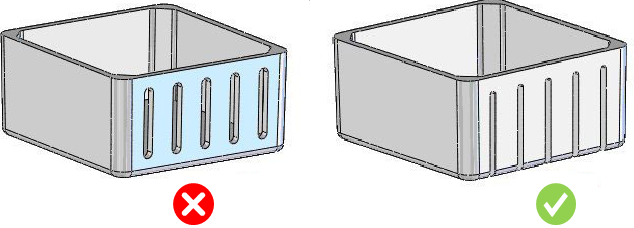

製造を容易にするため、アンダーカットは回避する必要があります。
アンダーカットには通常、追加の機構が必要となり、金型コストと複雑さが増加します。また、部品にはたわみや変形のための逃げ（余裕）が必要です。
部品上のアンダーカットは、一般的に回避する必要があります。工夫した部品設計や、設計上のわずかな譲歩によって、アンダーカットのための複雑な機構を不要にできる場合が多くあります。

注記：
フィレットの可視面が大きく、その面のうちごく小さな領域（<10%）のみがアンダーカットとして示される場合、本ルールはその領域をアンダーカットとして検出しません。これは、実際にはアンダーカット面のその程度の小さな部分であれば、エジェクタピンを用いて押し出すことが可能であるためです。小さなアンダーカットにはサイドアクションは不要です。